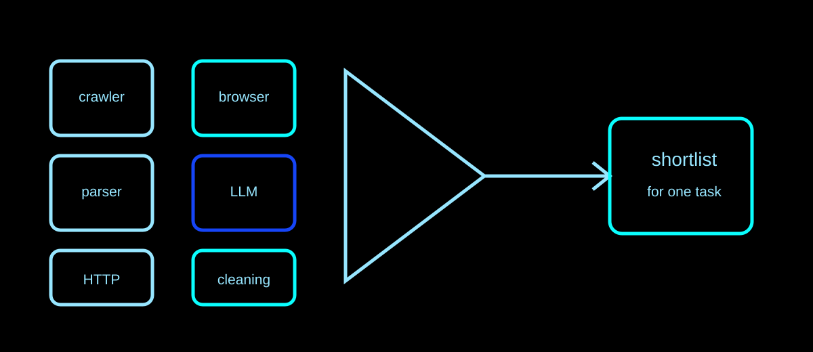

Tool discovery
Awesome Scraping: How to Use a Scraping Tools Directory
Awesome Scraping is a curated index of web-scraping projects. It is useful for building a shortlist across frameworks, browser automation, parsers, and data-cleaning tools; it is not evidence that a listed project is safe, maintained, or right for your task.
Published

Quick definition
Awesome Scraping is a public GitHub directory that groups tools by roles such as crawling, browser automation, HTTP clients, parsers, extraction, and sanitisation. Its categories make exploration faster than searching for a generic “best scraper.”
Turn a directory into a decision
Begin with the source, not the tool. Is the target a stable public API, a static HTML document, a JavaScript application, or an account-bound flow? Then set constraints: language, deployment, rate budget, data sensitivity, and permission. That removes most candidates before comparing features.
For the remaining projects, inspect recent releases, license, issue activity, dependencies, documentation, and the exact data they transmit. Run a small test against pages you are allowed to access. Stars and list placement are discovery signals, not quality scores.
Limits
Directories update at different speeds and can include abandoned or incompatible projects. Tools designed to evade a site’s defences deserve particular scrutiny: technical capability is not permission to bypass access rules.